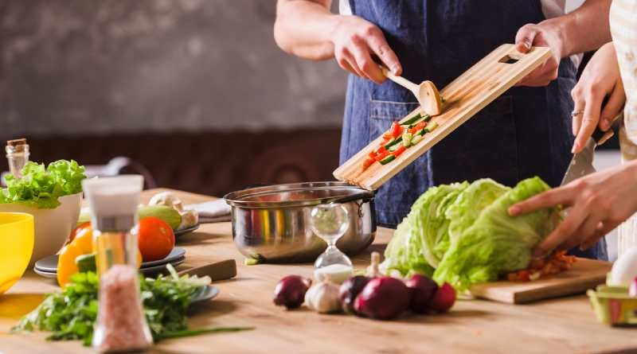
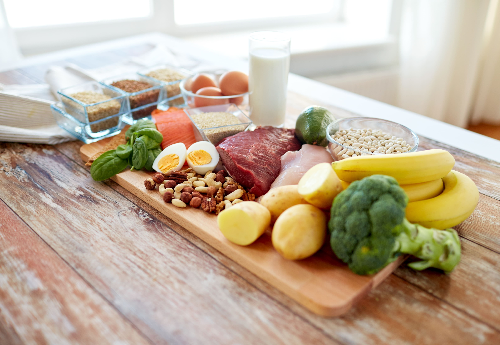
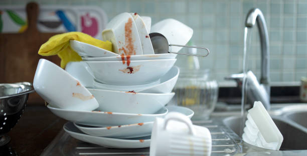

1
Organización y preparación previa: Antes de comenzar a cocinar, asegúrate de tener todos los
ingredientes
necesarios y preparados. Limpia y corta los vegetales, mide los ingredientes secos y prepara los utensilios
que necesitarás. Esto te ayudará a ahorrar tiempo y evitará contratiempos durante el proceso de cocción.
2
Controla el calor: Aprende a controlar el calor en tu cocina. Diferentes platos requieren
diferentes niveles
de calor y tiempos de cocción. Familiarízate con tu estufa y horno para ajustar correctamente la temperatura.
Además, ten cuidado con el calor excesivo que pueda quemar los alimentos.


3
Prueba y ajusta los sabores:
No tengas miedo de probar tus platillos mientras cocinas y ajustar
los sabores
según sea necesario. Agrega más sal, especias, ácidos o edulcorantes según tu gusto personal. La práctica y la
experimentación te ayudarán a desarrollar un sentido del equilibrio de sabores.
4
Limpieza mientras cocinas:
Mantén tu área de trabajo limpia mientras cocinas. Lava los utensilios y
recipientes que ya no necesites para mantener el orden y facilitar la limpieza al final. Esto te ayudará a
mantener un ambiente de cocina más ordenado y agradable, además de ahorrarte tiempo al final de la
preparación.
